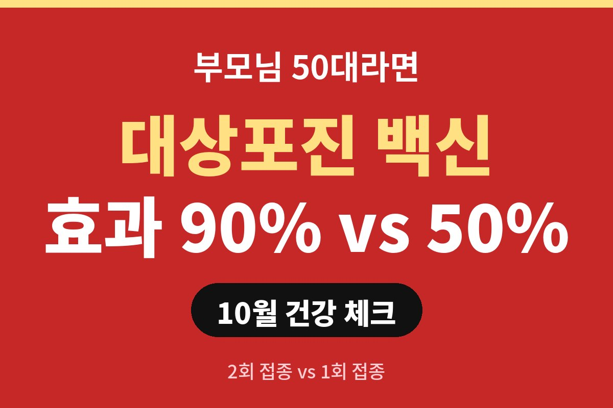
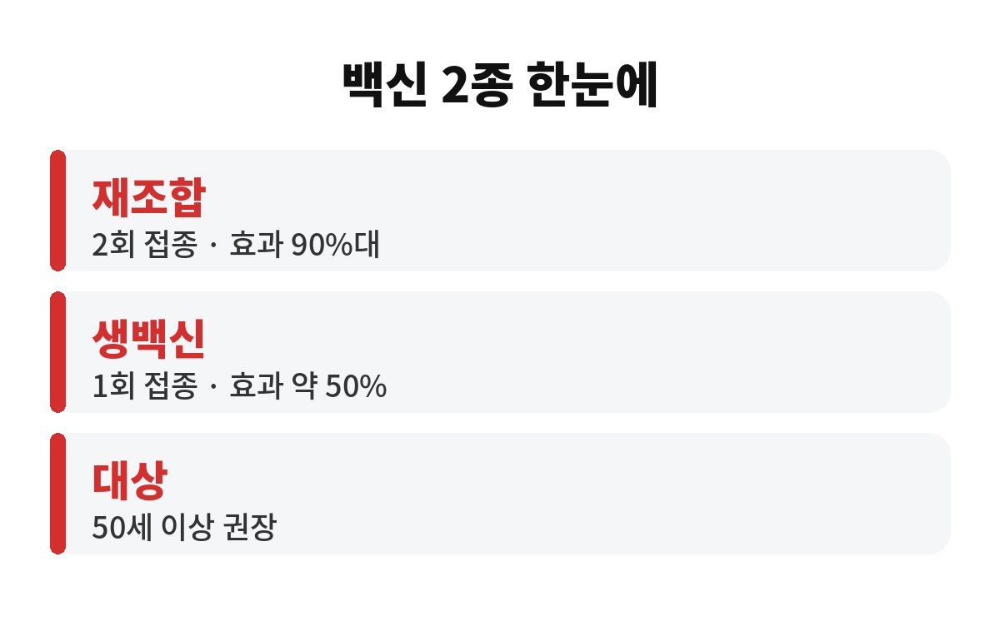
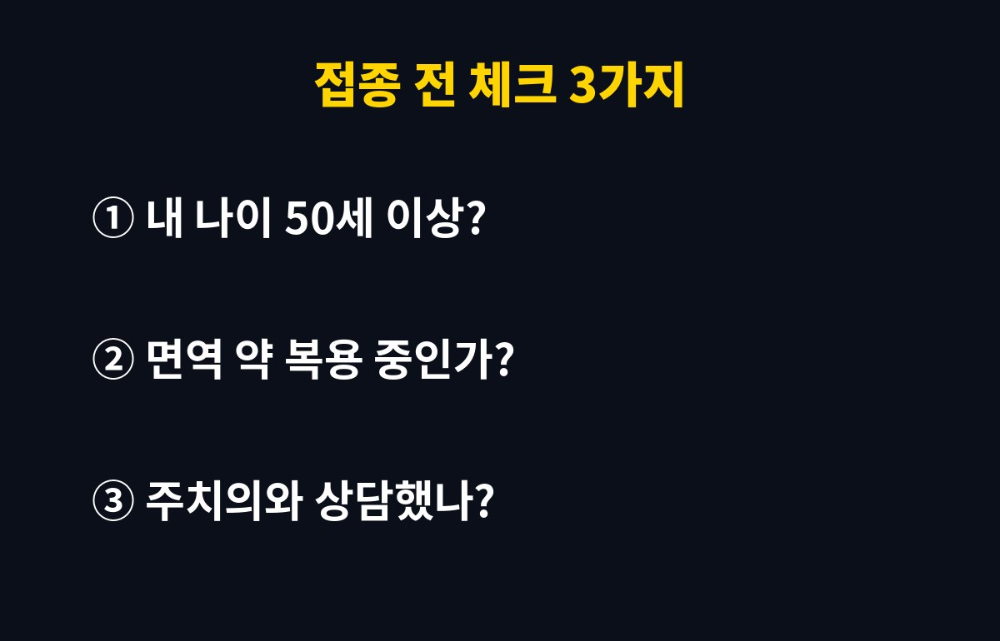

대상포진 백신은 2회 맞는 재조합 백신이 예방 효과 90%대로 알려져 있고, 1회 맞는 생백신은 약 50% 안팎으로 평가됩니다. 접종 권장 연령은 보통 50세 이상이에요.
그런데 부모님이 50대 이상이신데 "아직 괜찮겠지" 하고 미루고 계신가요? 대상포진에 걸리면 어떤 일이 벌어지는지, 그리고 왜 하필 10월에 챙기라는 건지 궁금하시죠.
대상포진은 어릴 때 앓은 수두 바이러스가 몸속에 숨어 있다가, 면역력이 떨어질 때 다시 깨어나 생기는 병이에요. 한 번 수두를 앓은 사람이라면 누구나 후보인 셈이죠. 그래서 "나는 건강하니까 괜찮다"는 말이 잘 안 통합니다.
재조합 백신은 임상에서 50세 이상 성인의 대상포진을 90%대로 줄인 것으로 보고됐어요. 물론 이 숫자는 임상시험 기준의 어림값이라, 모든 사람에게 똑같이 적용되진 않습니다. 그래도 다른 선택지와 비교하면 차이가 큰 편이에요.
가장 큰 차이는 접종 횟수와 효과예요. 아래 표로 한눈에 보세요.
| 구분 | 재조합 백신 | 생백신 |
| 접종 횟수 | 2회(보통 2~6개월 간격) | 1회 |
| 예방 효과 | 90%대 | 약 50% 안팎 |
| 면역이 약한 사람 | 상담 후 선택 가능 | 접종 제한이 있을 수 있음 |
1회로 끝나니 편해 보이지만, 효과 숫자만 보면 아쉬움이 있죠. 반대로 2회짜리는 두 번째 접종을 깜빡하면 효과가 덜할 수 있으니, 일정은 꼭 달력에 적어 두세요. 가격은 병원마다 달라서 미리 전화로 물어보시는 게 가장 정확합니다.
이게 백신을 챙기라고 하는 진짜 이유예요. 피부에 물집이 올라오는 건 보통 몇 주 안에 가라앉지만, 문제는 그다음입니다. 발진이 나은 뒤에도 신경통이 남는 대상포진 후 신경통이 생기면, 옷깃만 스쳐도 아프다는 분들이 많아요. 이 통증이 몇 달, 심하면 그 이상 이어지기도 합니다.
나이가 많을수록 이 신경통 위험이 커진다고 알려져 있어서, 50대 이후에 백신 이야기가 나오는 거예요. 밤잠 설치는 통증을 겪고 나서 후회하기보다, 미리 막는 쪽이 훨씬 싸게 먹힙니다.
솔직히 대상포진 백신은 꼭 10월에만 맞는 건 아니에요. 다만 환절기와 연말로 접어들면 피로가 쌓이고 면역력이 흔들리기 쉬운 때라, 지금 챙기기 좋은 시기이긴 합니다. 2회 접종을 하려면 첫 접종 후 몇 달 뒤에 두 번째가 필요하니, 늦어질수록 일정이 뒤로 밀리고요.
접종 전에는 이 세 가지만 확인하세요. 첫째, 나이가 50세 이상인지. 둘째, 면역억제제나 스테로이드 같은 약을 먹고 있는지. 셋째, 지금 열이 나거나 아픈 상태는 아닌지. 하나라도 걸리면 주치의에게 먼저 물어보시고요.
부모님께 "백신 맞으셨어요?" 한마디 건네 보는 건 어떨까요? 이 글이 도움이 되셨다면 구독해 두시고, 다음 건강 글도 놓치지 마세요.


이 글은 일반 정보이며 진단·치료를 대신하지 않습니다. 접종 여부는 반드시 전문의와 상담하세요.